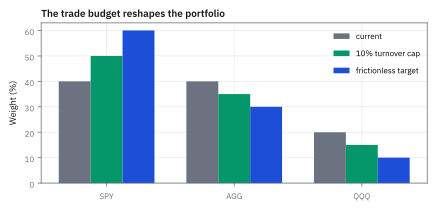
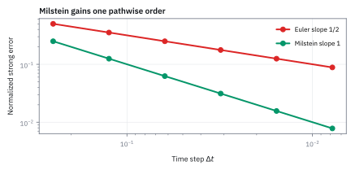

12.8 Simulating Stochastic Differential Equations — Euler, Milstein, and Exact Schemes
แยกความคลาดเคลื่อนจากการสุ่มออกจากความคลาดเคลื่อนของช่วงเวลา
ตัวจำลองเดิมให้ค่าเปลี่ยนเมื่อเพิ่ม steps จาก 4 เป็น 64: confidence interval ที่แคบยืนยันคำตอบแล้วหรือไม่?
เฉลย: เมื่อเพิ่ม steps จาก 4 เป็น 64 confidence interval ที่แคบยังไม่ยืนยันคำตอบ เพราะมันวัด sampling noise แต่ไม่เห็น bias ใน time grid
ไม้บรรทัดที่ละเอียดขึ้นอาจไม่ทำคำตอบนิ่งขึ้นทันที; Euler, Milstein และ exact scheme จึงต้องแข่งกันที่ error คนละชนิด
ศัพท์ที่ใช้ในหัวข้อนี้
- Euler–Maruyama scheme
- first-order time-stepping rule ที่ตรึง drift และ diffusion ที่ต้นช่วง ใช้จำลอง stochastic differential equation ทั่วไปด้วย implementation ที่ง่าย
- Milstein scheme
- time-stepping rule ที่เพิ่ม derivative correction ของ diffusion ใช้ลด pathwise error เมื่อ diffusion ขึ้นกับ state และ Brownian driver เป็น scalar
- exact scheme
- transition rule ที่สุ่มจาก distribution จริงของ model ในแต่ละช่วง ใช้ตัด time-discretization error เมื่อ closed-form transition มีอยู่
- sampling error
- ความคลาดเคลื่อนจากจำนวน random paths ที่มีจำกัด ใช้รายงานเป็น standard error และลดลงเมื่อเพิ่ม path count
- discretization bias
- ความต่างเชิงระบบจากการแทน continuous dynamics ด้วย finite time steps ใช้ตรวจด้วย grid refinement และไม่หายเมื่อเพิ่ม paths อย่างเดียว
- strong convergence
- การที่ approximate path เข้าใกล้ exact path บน Brownian shocks ชุดเดียวกัน ใช้ตรวจ path simulation และ sensitivity ที่ต้องจับคู่ paths
- weak convergence
- การที่ expected function ของ terminal state เข้าใกล้ค่าจริง ใช้ประเมิน bias ของ Monte Carlo price เมื่อไม่ต้องตาม exact path ทุกจุด
- path-dependent payoff
- payoff ที่ขึ้นกับสิ่งที่เกิดระหว่างทาง ไม่ใช่ terminal state อย่างเดียว ใช้กับ Asian, barrier และ lookback structures
- Geometric Brownian Motion (GBM)
- price model ที่ diffusion แปรตามระดับราคาและมี exact lognormal transition ใช้เปรียบเทียบความคลาดเคลื่อนของ numerical schemes
- Cox–Ingersoll–Ross (CIR) model
- mean-reverting square-root diffusion ที่มีขอบศูนย์ ใช้ทดสอบ scheme ที่ต้องรักษา state ไม่ให้ติดลบ
สัญลักษณ์ที่ใช้ในหัวข้อนี้
| สัญลักษณ์ | ความหมาย | หน่วย |
|---|---|---|
| $X_k$ | approximate state ที่ time step $k$ | หน่วยของ state |
| $a(X_k)$ | drift coefficient ที่ต้นช่วง | state/year |
| $b(X_k)$ | diffusion coefficient ที่ต้นช่วง | state/$\sqrt{\text{year}}$ |
| $b'(X_k)$ | อัตราที่ขนาดแรงกระแทกเปลี่ยนไปเมื่อ state ขยับ คือ derivative ของ diffusion coefficient | $1/\sqrt{\text{year}}$ |
| $\Delta t$ | ความยาว time step | year |
| $\Delta W_k$ | Brownian increment ในหนึ่ง step | $\sqrt{\text{year}}$ |
| $Z_k$ | independent standard Normal draw | ไม่มีหน่วย |
| $S_k$ | approximate AAPL price | USD/share |
| $\mu,\sigma$ | GBM annual drift และ volatility | $1/\text{year}$, $1/\sqrt{\text{year}}$ |
| $p_s,p_d$ | strong และ weak convergence orders | ไม่มีหน่วย |
ที่มาที่ไป: ทฤษฎีสวยแค่ไหน ก็ต้องรันบนเครื่องจริง
สูตรปิดที่ได้จากบทนี้ใช้ได้กับแบบจำลองไม่กี่ตัวเท่านั้น พอเจอสัญญาหรือแบบจำลองที่ซับซ้อนขึ้น ก็ไม่เหลือทางเลือกอื่นนอกจากจำลองเอา
และทันทีที่เริ่มจำลอง ปัญหาใหม่ก็โผล่มา คือเราซอยเวลาเป็นก้าว ๆ ซึ่งเป็นการประมาณ และความคลาดเคลื่อนจากการประมาณนั้นปนอยู่กับความคลาดเคลื่อนจากการสุ่ม
การแยกสองอย่างนี้ออกจากกันเป็นทักษะที่จำเป็น เพราะแก้คนละวิธี อย่างแรกแก้ด้วยการซอยถี่ขึ้นหรือใช้สูตรที่ดีกว่า อย่างที่สองแก้ด้วยการสุ่มมากขึ้น
หัวข้อนี้ใช้ GBM เป็นสนามทดสอบ เพราะมันมีสูตรปิดให้เทียบ จึงรู้คำตอบที่ถูกต้องอยู่แล้ว
ที่มาในประวัติศาสตร์: จาก Euler (1768) สู่ Maruyama (1955) และ Milstein (1974)
ในปี 1768 Leonhard Euler คิดค้นวิธีเชิงตัวเลขก้าวหน้าสำหรับสมการที่ไม่มีความสุ่ม โดยการเดินตามเส้นสัมผัส $x_{k+1} = x_k + f(x_k)\Delta t$ ซึ่งเป็นวิธีที่ตรงไปตรงมาและให้ order of convergence เท่ากับ 1 เสมอ
เวลาผ่านไปเกือบสองศตวรรษ ในปี 1955 Gisiro Maruyama นักคณิตศาสตร์ชาวญี่ปุ่น ได้ขยายวิธีของ Euler สู่สมการเชิงสุ่ม โดยบวก Brownian increment $\Delta W_k = \sqrt{\Delta t}Z_k$ เข้าไป จนเกิดเป็น Euler–Maruyama scheme ทว่าผู้ใช้งานพบปัญหาใหญ่ คือ strong convergence order ตกลงมาเหลือเพียง 0.5 การจะลด error บนเส้นทางเดี่ยวลงครึ่งหนึ่ง ต้องซอย step ย่อยเพิ่มขึ้นถึง 4 เท่า ทำให้กินเวลาคำนวณมหาศาล
ในปี 1974 Grigori Milstein แก้ปัญหานี้ด้วยการใช้ stochastic Taylor expansion เติมพจน์ integral สองชั้นของ diffusion เข้าไป ทำให้ strong order ดีดกลับขึ้นมาเป็น 1.0 สำเร็จ จุดตัดในการใช้งานจริงคือ ใน model หลายมิติ Milstein ต้องการการคำนวณ Lévy area ข้ามมิติที่ซับซ้อนมาก ในทางปฏิบัติ Euler จึงยังคงเป็นม้าศึกหลักเมื่อมิติของระบบสูงขึ้น
ขั้นที่ 1 — นิยามของก้อนสุ่มที่จะใช้ในโค้ด: ต้องคูณด้วยรากของช่วงเวลา
บรรทัดนี้เป็น นิยาม ของวิธีสร้างก้อนสุ่มในโปรแกรม ซึ่งมาจากสมบัติที่ 2 ของหัวข้อ 10.1 ที่ว่า variance ของ increment เท่ากับความยาวช่วง การคูณด้วยรากจึงให้ variance ถูกต้องพอดี ถ้าเผลอคูณด้วยช่วงเวลาแทนราก ความเหวี่ยงที่จำลองได้จะเล็กเกินไปมหาศาลเมื่อ step เล็ก และผลทั้งหมดจะผิดโดยที่กราฟยังดูสมเหตุสมผล
$\Delta t$ คือ step หน่วยปี, $Z_k$ คือ independent standard Normal draw และ $\Delta W_k$ จึงมี variance เท่ากับ $\Delta t$ ตาม Brownian scaling
ขั้นที่ 2 — นิยามของ Euler–Maruyama: ตรึงตัวคูณไว้ที่ต้นก้าว
บรรทัดนี้เป็น นิยาม ของวิธีที่เราเลือกใช้ ไม่ใช่ผลที่พิสูจน์ เราตัดสินใจอ่านค่า drift และ diffusion ที่ต้นก้าว แล้วถือว่ามันคงที่ตลอดก้าวนั้น เหตุผลที่เลือกต้นก้าว ไม่ใช่ปลายก้าว คือเรื่องเดียวกับหัวข้อ 12.3 การอ่านที่ปลายก้าวแปลว่ารู้อนาคต ซึ่งเทรดจริงทำไม่ได้ ส่วนราคาของการตรึงไว้ทั้งก้าว คือสิ่งที่ขั้นถัดไปจะคำนวณ
ตรึง drift $a$ และ diffusion $b$ ที่ต้น step $X_k$ แล้วเพิ่ม deterministic increment กับ random increment เพื่อได้ state ถัดไป
ขั้นที่ 3 — Milstein correction
Euler ละเลยพจน์หนึ่งที่ Itô บอกว่ามีจริง Milstein เติมพจน์นั้นกลับเข้าไป หกบรรทัดนี้แสดงว่าพจน์ที่เติมไม่ได้เดามา มันคือผลของการยอมรับว่า diffusion เปลี่ยนระหว่างก้าว และ integral ที่โผล่มาก็มีคำตอบแบบปิดอยู่แล้วตั้งแต่หัวข้อ 12.3
Euler ละเลยอะไรไป diffusion ไม่ได้คงที่ตลอดก้าว มันเปลี่ยนตามค่าที่ขยับไประหว่างก้าว จึงกระจายแบบ Taylor หนึ่งพจน์ แล้วแทนส่วนที่สุ่มของการขยับลงไป ส่วนที่เป็น drift เล็กกว่าหนึ่งขั้นจึงทิ้งได้
แทนกลับเข้า integral ได้พจน์เดิมของ Euler บวกพจน์ใหม่ ซึ่งเป็น integral ที่หัวข้อ 12.3 คำนวณไว้แบบปิดแล้ว ไม่ต้องคำนวณใหม่
สังเกตพจน์ที่หักช่วงเวลาออก ซึ่งติดอยู่ในผลนั้น มันทำให้ค่าเฉลี่ยของ correction เป็นศูนย์พอดี แปลว่าการแก้นี้ไม่ได้ย้ายค่าเฉลี่ยไปไหนเลย
ประกอบเป็นสูตรที่เขียนโค้ดได้ ผลคือแต่ละเส้นทางตรงขึ้น โดยที่ค่าเฉลี่ยไม่เปลี่ยน นั่นคือความหมายของการลดความคลาดเคลื่อนแบบ strong ไม่ใช่ weak
ขั้นที่ 4 — สาม rules สำหรับ GBM
GBM โชคดีตรงที่มีสูตรเดินหน้าแบบตรงเป๊ะอยู่ด้วย จึงเทียบสามวิธีบนโจทย์เดียวกันได้ และรู้ว่าคำตอบที่ถูกคืออะไร
สำหรับ GBM diffusion คือ $b(S)=\sigma S$ และ derivative คือ $\sigma$; superscripts $E,M,X$ แทน Euler, Milstein และ exact log transition ตามลำดับ
ขั้นที่ 5 — พิสูจน์ลำดับชั้นของสาม scheme จาก Itô's Lemma และ Taylor expansion
ทั้งสาม scheme ไม่ได้เกิดขึ้นแยกจากกัน แต่เป็นลำดับชั้นของการตัดทอนอนุกรม Taylor จากผลเฉลยแม่นตรง
เมื่อเรากระจาย exponential ของ exact scheme จะเห็นทันทีว่า Milstein คือ Taylor อันดับสอง ส่วน Euler คือการทิ้งความผันผวนระหว่างก้าวออกไป
ใช้ Itô's Lemma กับ $\ln S_t$ เพื่อหา exact solution ของ Geometric Brownian Motion (GBM) โดยดึงก้อนเลขชี้กำลังออกมาตั้งชื่อเป็น $u$ เพื่อเตรียมกระจาย Taylor
กระจาย $e^u$ ถึงกำลังสอง โดยอาศัย Brownian scaling ที่ทำให้ $(\Delta W_k)^2$ มีขนาดระดับ $\Delta t$ จึงใหญ่กว่าเทอมผสม $\Delta t\Delta W_k$ ที่มีขนาด $\Delta t^{3/2}$
เมื่อรวมพจน์ $-\frac{1}{2}\sigma^2\Delta t$ จาก drift เข้ากับ $+\frac{1}{2}\sigma^2(\Delta W_k)^2$ จากก้อนกำลังสอง จะประกอบร่างเป็นพจน์แก้ของ Milstein พอดี และหากตัดพจน์นี้ทิ้งก็จะถอยกลับไปเป็น Euler
Worked Example — โจทย์และสิ่งที่ให้มา
โจทย์ให้อะไรมาบ้าง: ใช้ราคาเริ่มต้น \$200, annual price drift 10%, volatility 30%, step size 0.25 ปี และ standard Normal draws 0.5, -1.2, 0.8, 0.3 จึงได้ Brownian increments 0.25, -0.60, 0.40, 0.15 การตรึง shocks ทำให้ความต่างที่เห็นเป็นของ scheme ไม่ใช่ random noise
ตารางเดินสี่ก้าว: shock เดียวกัน สาม scheme
| ก้าวที่ $k$ | $\Delta W_k$ | Euler $S^E$ | Milstein $S^M$ | Exact $S^X$ |
|---|---|---|---|---|
| เริ่ม | — | 200.0000 | 200.0000 | 200.0000 |
| 1 | +0.25 | 220.0000 | 218.3125 | 218.5615 |
| 2 | −0.60 | 185.9000 | 185.5547 | 185.0854 |
| 3 | +0.40 | 212.8555 | 211.7086 | 211.5724 |
| 4 | +0.15 | 227.7554 | 224.3609 | 224.3747 |
ทั้งสามคอลัมน์ใช้ $\Delta W_k$ ชุดเดียวกันทุกก้าว ความต่างที่เห็นจึงเป็นของสูตร ไม่ใช่ของความบังเอิญ
ตัวอย่างก้าวแรกของ Euler คือ $200[1+0.10(0.25)+0.30(0.25)]=200(1.10)=220.0000$ ส่วน Exact คือ $200e^{(0.10-0.045)(0.25)+0.30(0.25)}=218.5615$
ขั้นที่ 6 — endpoint reconciliation
อ่านแถวสุดท้ายของตารางมาเทียบกัน
Exact คือคำตอบที่ถูกต้อง เพราะ GBM มีสูตรปิด Milstein เกาะติดแทบสนิท ส่วน Euler หลุดไปทางสูงกว่า
ความต่างสะสมมาจากทุกก้าว ไม่ได้เกิดที่ก้าวสุดท้ายก้าวเดียว
ขั้นที่ 7 — relative errors ของ path นี้
วัดว่าสองวิธีประมาณพลาดไปกี่เปอร์เซ็นต์ เทียบกับคำตอบที่ถูก
Euler พลาดไป 1.5% ส่วน Milstein พลาดเพียง 0.006% ซึ่งเล็กกว่าราว 240 เท่า ด้วยงานคำนวณที่เพิ่มขึ้นนิดเดียว
ขั้นที่ 8 — นิยามของสองอันดับความแม่น: วัดกันคนละอย่าง
สองก้อนนี้เป็น นิยาม ของวิธีวัดความคลาดเคลื่อน ไม่ใช่ผลที่พิสูจน์ แบบแรกวัดว่าเส้นทางที่จำลองห่างจากเส้นทางจริงเท่าไร เมื่อใช้ก้อนสุ่มชุดเดียวกัน แบบที่สองวัดแค่ว่าค่าเฉลี่ยของสิ่งที่สนใจเพี้ยนไปเท่าไร ซึ่งเป็นสิ่งที่การตั้งราคาต้องการ สองอย่างนี้ไม่เท่ากัน และวิธีหนึ่งอาจดีกว่าในแบบหนึ่งแต่แย่กว่าในอีกแบบ ผลจาก path เดียวจึงสรุปอะไรไม่ได้เลย ต้องรันหลาย step size แล้วดูอัตราการหด
$p_s$ วัด expected pathwise terminal error บน coupled shocks; $p_d$ วัด bias ของ expected test function $\varphi$ และ notation big-O บอก asymptotic rate เมื่อ step เล็ก
ขั้นที่ 9 — orders มาตรฐาน
ระบุตัวเลขมาตรฐานของแต่ละวิธี พร้อมแยกให้ชัดระหว่างความแม่นของ path เดี่ยว กับความแม่นของค่าเฉลี่ย ซึ่งไม่เท่ากัน
ภายใต้ smooth coefficients และ scalar commutative noise Euler มี strong order หนึ่งส่วนสองและ weak order หนึ่ง ส่วน Milstein ยก strong order เป็นหนึ่ง; nonsmooth payoffs อาจลด observed weak rate
ขั้นที่ 10 — พิสูจน์ทำไม Euler มี weak order ดีกว่า strong order: ความคลาดเคลื่อนเฉลี่ยเป็นศูนย์
ความลับที่ทำให้ Euler คำนวณราคา vanilla option ได้ดีทั้งที่เดินเส้นทางเดี่ยวได้แย่ อยู่ที่ก้อน error ที่ถูกทิ้งไป
พจน์แก้ของ Milstein ที่ Euler ละเลยไปนั้นมีค่าเฉลี่ยเป็นศูนย์พอดี เมื่อเราเฉลี่ยหลายเส้นทางใน Monte Carlo ค่าความผิดพลาดจึงหักล้างกันเองจนหมด
พจน์ที่ Euler ทิ้งไปคือ $\epsilon_k^{\text{local}}$ ซึ่งมี $(\Delta W_k)^2 - \Delta t$ เป็นตัวกำหนด เมื่อหา conditional expectation จะได้ $\Delta t - \Delta t = 0$ พอดี แปลว่า error ท้องถิ่นไม่มี bias เลย
แต่บนเส้นทางเดี่ยว ค่าสัมบูรณ์ของก้อนนี้ไม่เป็นศูนย์และมีขนาดตาม scale ของ $\Delta t$ เมื่อเดินสุ่ม $N = T/\Delta t$ ก้าว ผลบวกของ noise จะสะสมตามกฎ square root ได้ $\sqrt{N}\Delta t = \Delta t^{1/2}$ ทำให้ strong order เหลือเพียงครึ่งเดียว
สำหรับ weak order ก้อน error อันดับหนึ่งเฉลี่ยเป็นศูนย์ bias ที่เหลือจึงมาจากพจน์กำลังสองของ drift ซึ่งมีขนาด $O(\Delta t^2)$ รวม $N$ ก้าวแล้วได้ $O(\Delta t)$ อธิบายว่าทำไม Euler จึงให้ค่าเฉลี่ยที่แม่นยำกว่าเส้นทางเดี่ยวมาก
ขั้นที่ 11 — เมื่อ Euler ทำราคาเป็นลบ
Euler มีจุดอ่อนที่อันตรายกว่าความคลาดเคลื่อน คือมันทำให้ราคาติดลบได้ ซึ่งเป็นไปไม่ได้ในโลกจริง
Euler GBM multiplier ติดลบเมื่อ standard Normal draw $Z$ ต่ำกว่า threshold ที่ขึ้นกับ drift, volatility และ step size; exact log transition ไม่มีปัญหานี้เพราะ exponential เป็นบวก
ขั้นที่ 12 — stress case หนึ่งปี
แสดงว่าปัญหานั้นเกิดจริงบ่อยแค่ไหน เมื่อความผันผวนสูงและก้าวเวลายาว
stylized high-volatility equity stress ในตลาดสหรัฐฯ ใช้ one-year step; standard Normal lower tail ที่ -1.375 เท่ากับประมาณ 8.46% จึงทำให้ Euler สร้าง negative prices บ่อยเกินรับได้
แล้วเอาไปใช้ทำอะไรได้จริงบ้าง
การเลือกวิธีจำลองให้ถูก ตัดสินว่าตัวเลขที่ได้เชื่อได้แค่ไหน
ใช้จำลองราคาสำหรับตั้งราคา derivative ที่ไม่มีสูตรปิด ซึ่งเป็นส่วนใหญ่ของสัญญาที่ซื้อขายจริง
ใช้ทดสอบความเสี่ยงในสถานการณ์สมมติ โดยสุ่มเส้นทางจำนวนมากแล้วดูผลที่แย่ที่สุด
ใช้ตัดสินว่าจะยอมลงแรงเขียนวิธีที่แม่นกว่าหรือไม่ ซึ่งคุ้มเมื่อก้าวเวลายาวหรือความผันผวนสูง
Figure 12.8a — Same shocks, three endpoints

บน grid สี่ช่วง Milstein เกือบทับ exact endpoint ขณะที่ Euler สูงกว่า 1.51%; comparison นี้ใช้ common random numbers จึงอ่าน error ได้ตรง
Figure 12.8b — Strong-order slopes

บน log–log axes reference slope ของ Euler ลดช้ากว่า Milstein; ลด step 4 เท่าให้ Euler error ลดราว 2 เท่า แต่ Milstein ลดราว 4 เท่าภายใต้ regularity assumptions
Figure 12.8c — Two error budgets

เพิ่ม paths ลด sampling error แต่ปล่อย discretization bias เท่าเดิม; grid refinement จึงต้องถูกทำแยกจาก confidence interval
คำตอบ ตรวจเอง และแปลว่าอะไร
คำตอบและความหมาย: exact endpoint ของ path ตัวอย่างคือ 224.3747 USD; Milstein ต่างเพียง 0.0138 USD แต่ Euler สูงกว่า 3.3807 USD. ตัวเลข path เดียวนี้ยังไม่พิสูจน์ convergence จึงต้องรันอย่างน้อยสอง step sizes และแยก sampling error ออกจาก time-discretization bias.
ตรวจเองใน 10 วินาที: หาร Milstein error 0.0138 ด้วย exact endpoint 224.3747 ต้องต่ำกว่า 0.0062%, ส่วน Euler error 3.3807 สูงราว 1.51%. ใช้ผลต่างนี้เลือก scheme และ step size แทนการดู confidence interval อย่างเดียว.
อ่านผลจากหลายเส้นทาง
เมื่อมีหลาย paths เราสรุปค่าเฉลี่ยและความไม่แน่นอนด้วย Monte Carlo ได้; แนวคิดนี้เป็นการต่อยอดของการจำลองในบทนี้ ไม่ใช่ prerequisite ของหัวข้อนี้ รายละเอียดเรื่องการสรุปผลและ bootstrap จะเรียนอย่างเป็นระบบในหัวข้อ 17.5.
กับดัก: เรียก Euler กับ constant diffusion ว่า exact
Milstein correction เป็นศูนย์เมื่อ diffusion ไม่ขึ้นกับ state แต่ Euler ยังมี discretization error จาก drift ที่ขึ้นกับ state เช่น Vasicek; เท่ากันระหว่างสอง schemes ไม่ได้แปลว่าเท่ากับคำตอบจริง เพราะสองวิธีอาจผิดเหมือนกันได้
ข้อจำกัด: วิธีนี้สมมติอะไร และของจริงเป็นอย่างไร
| เรื่อง | วิธีนี้สมมติว่า | ของจริงเป็นอย่างไร | ผลที่ตามมาเวลาใช้งาน |
|---|---|---|---|
| ขนาดก้าว | ยิ่งซอยถี่ยิ่งแม่น | จริง แต่งานคำนวณโตตามจำนวนก้าว | ต้องแลกระหว่างความแม่นกับเวลาที่ใช้ ซึ่งมีจุดที่เหมาะที่สุด |
| ค่าที่เป็นไปได้ | วิธีง่าย ๆ ให้ค่าที่สมเหตุสมผล | วิธีง่าย ๆ ทำให้ราคาติดลบได้ | ต้องมีมาตรการกันไว้ ไม่งั้นผลจำลองจะมีเส้นทางที่เป็นไปไม่ได้ปนอยู่ |
| ชนิดของความแม่น | แม่นแบบเดียว | ความแม่นของเส้นทางเดี่ยวกับของค่าเฉลี่ยเป็นคนละเรื่อง | การเลือกวิธีขึ้นกับว่าต้องการอะไร ถ้าต้องการแค่ค่าเฉลี่ย วิธีง่ายก็พอ |
แถวล่างเป็นเรื่องที่คนมองข้ามบ่อย และทำให้เลือกวิธีที่แพงเกินความจำเป็น
สรุปที่ใช้ได้จริง
- $\Delta W=\sqrt{\Delta t}Z$; ใช้ $\Delta tZ$ ทำ variance scale พัง
- Euler มี strong order 1/2 ส่วน Milstein มี strong order 1 ภายใต้เงื่อนไขมาตรฐาน
- exact transition ตัด discretization error แต่ path monitoring ยังต้องจัดการระหว่าง grid points
- รายงาน sampling error และ grid bias แยกกัน พร้อม common-random-number refinement test